Como emitir uma NF-e de venda
A NF-e (nota fiscal eletrônica, modelo 55) é a nota usada principalmente em vendas para empresas (com CNPJ) e em vendas com entrega. No caixa do dia a dia, o cupom é a NFC-e, emitido pelo PDV.
Este manual mostra a emissão manual de uma NF-e, preenchendo a nota do começo ao fim.
Antes de emitir, confira três coisas
- A empresa está configurada para emitir notas: certificado, série e impostos. Veja Como configurar a emissão de notas fiscais.
- O cliente tem cadastro completo: CPF ou CNPJ, Inscrição estadual (se tiver) e endereço. Veja Como cadastrar um cliente.
- Os produtos têm os dados fiscais: NCM, origem, ICMS, PIS/COFINS e CFOP. Veja Como configurar os dados fiscais de um produto.
Nos prints, o quadrado vermelho mostra onde você deve clicar ou digitar. Os dados do cliente aparecem cobertos de cinza de propósito.
Abra a tela de NF-e
No menu do lado esquerdo, clique em Vendas e depois em NF-e. A tela NF-e de Saída mostra:
- se os serviços da Sefaz para NF-e e NFC-e estão funcionando;
- até quando vale o certificado digital;
- um aviso vermelho quando o sistema está em Homologação (ambiente de teste, as notas não têm valor fiscal);
- a lista de notas, com o Status de cada uma.
Clique em Emitir NF-e, no canto de cima, à direita.
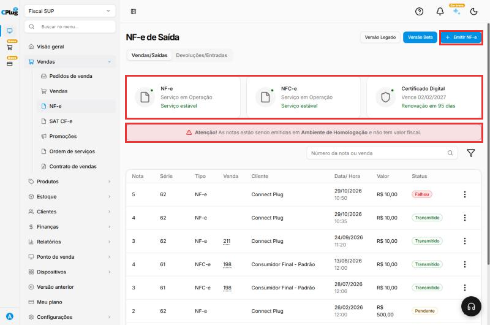
Confira as validações e a numeração
No topo da emissão, o sistema confere os dados do emitente (a sua empresa). Se aparecer Dados da Emitente estão corretos, siga em frente. Se aparecer algum aviso, corrija antes de continuar.
A Série e o Número vêm preenchidos com o próximo número livre. Não mude, a não ser que o contador oriente.
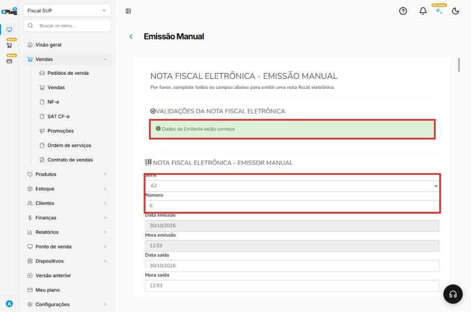
Escolha o cliente
Em Dados do cliente, clique em Cliente e escolha o cliente na lista. O sistema preenche sozinho os dados do cadastro.
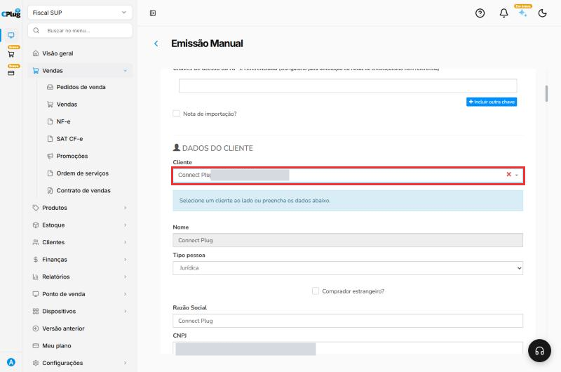
Confira os dados que vieram, principalmente:
- CNPJ ou CPF;
- Indicação de Inscrição Estadual: 1 - Contribuinte ICMS (empresa com IE), 2 - Contribuinte isento ou 9 - Não contribuinte (pessoa física e empresas sem IE);
- Inscrição Estadual, quando for contribuinte;
- endereço completo, com CEP.
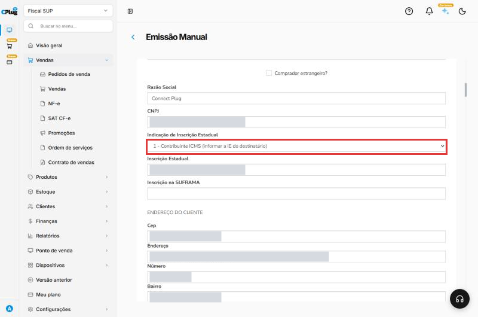
Preencha os dados da operação
Em Dados da operação:
- Natureza de operação: o tipo de operação, por extenso. Exemplo: "Venda de mercadoria".
- Tipo de operação: Saída, para venda.
- Destino da operação: 1 - Operação Interna (cliente no mesmo estado) ou 2 - Interestadual.
- Presença do Comprador: 1 - Operação presencial (cliente na loja) ou a opção que corresponde à venda (internet, telefone...).
- Finalidade de emissão: 1 - NF-e normal, para uma venda comum.
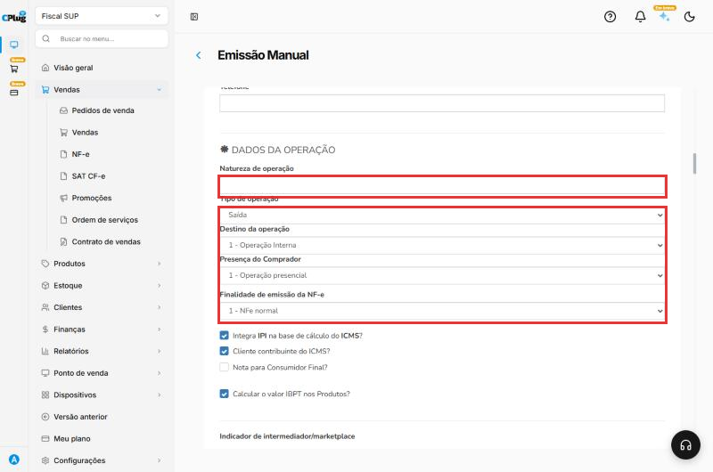
Informe o transporte
Na parte de transporte, em Modalidade do frete:
- 9 - Sem frete: o cliente levou a mercadoria na hora (sem entrega).
- 0 - Contratação do Frete por conta do Remetente (CIF): a sua empresa paga a entrega.
- 1 - Contratação do Frete por conta do Destinatário (FOB): o cliente paga a entrega.
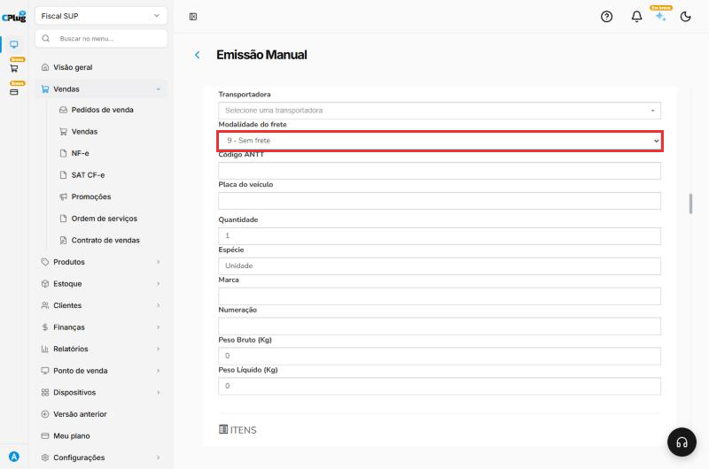
Adicione os produtos
Em Itens, clique em Produto e escolha o produto. O sistema traz o código, a descrição, o valor e os dados fiscais do cadastro.
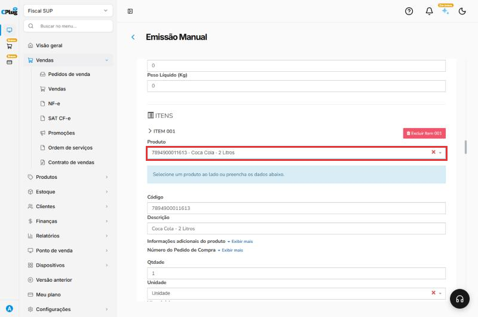
Confira a Qtdade, o Vl. unitário e o NCM.
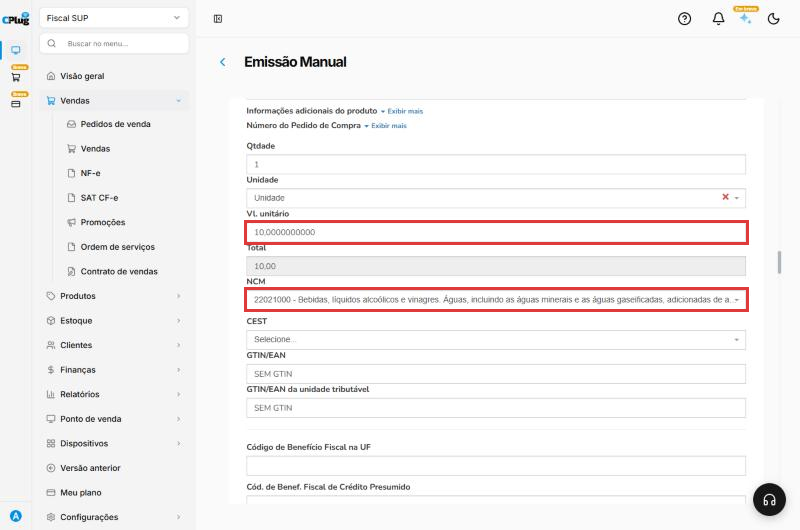
Confira o CFOP e os impostos do item
Mais abaixo no item:
- CFOP: se vier vazio, escolha o CFOP da venda. Digite o número para achar mais rápido. Exemplo: 5102 para venda comum dentro do estado; 5405 para produto com substituição tributária (ICMS 500 no Simples).
- Situação do ICMS e Origem: vêm do cadastro do produto. Confira.
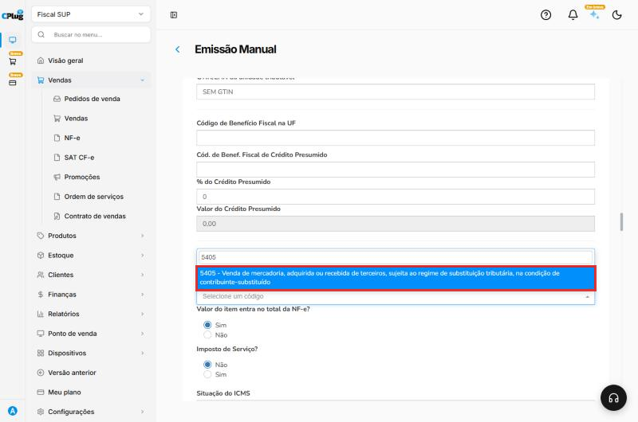
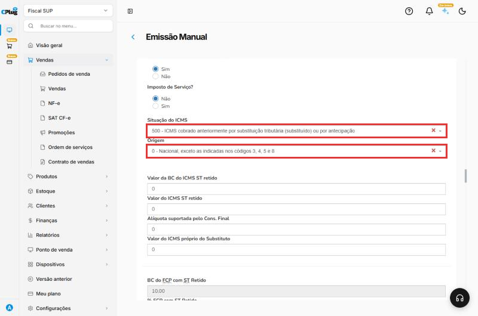
Para mais um produto, use o botão de adicionar item.
Preencha o pagamento
Em Dados do pagamento:
- Forma de Pagamento: 0 - À Vista ou 1 - À Prazo.
- Meio de Pagamento: como o cliente pagou (Dinheiro, Pix, cartão, boleto...).
- Valor do Pagamento: vem com o total da nota. Se o cliente pagou com mais de uma forma, use Adicionar outro pagamento.
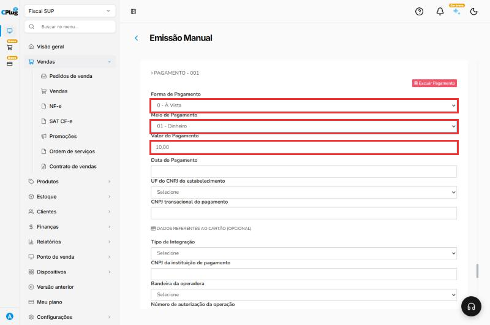
Fatura é opcional, mas precisa bater
Os Dados da fatura são opcionais. Se preencher, o valor líquido da fatura precisa ser igual à soma das parcelas. Senão, a Sefaz recusa a nota (Rejeição 851).
Salve a nota
No fim do formulário, clique em Salvar. Aparece NFE inserida com sucesso, e a nota entra na lista com o status Pendente: está salva, mas ainda não foi enviada à Sefaz.
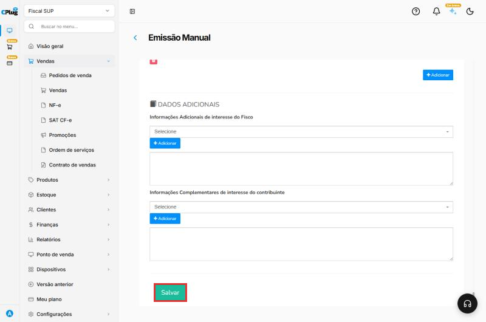
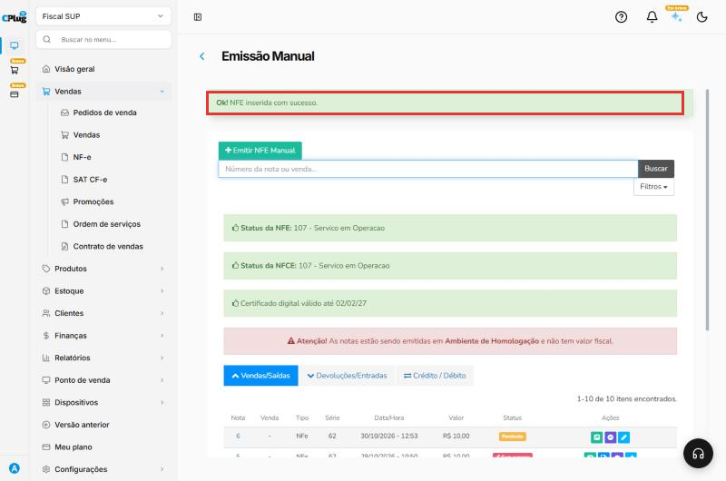
Transmita para a Sefaz
Volte para Vendas → NF-e. Na linha da nota Pendente, clique nos três pontinhos e depois em Transmitir NF-e. Aguarde a mensagem Transmitindo.
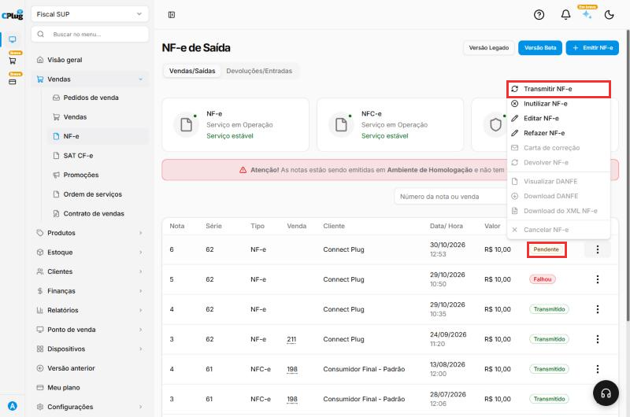
Quando a Sefaz autoriza, o status muda para Transmitido.
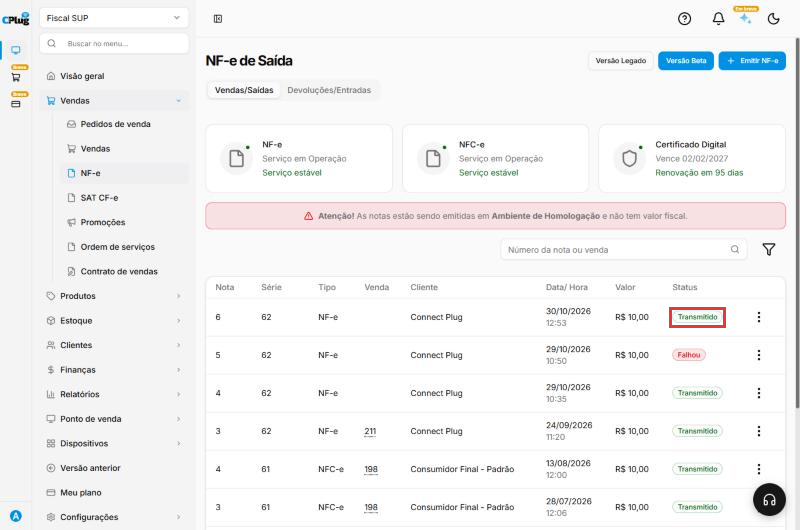
Depois de autorizada
Nos três pontinhos da nota autorizada você tem:
- Visualizar DANFE e Download DANFE: o documento impresso da nota, para entregar ao cliente.
- Download do XML NF-e: o arquivo da nota. Envie ao cliente quando ele pedir (empresas precisam do XML).
- Carta de correção: corrige pequenos erros de texto, sem mudar valores, impostos ou quem vendeu e comprou.
- Cancelar NF-e: veja Como cancelar, inutilizar ou corrigir uma nota fiscal.
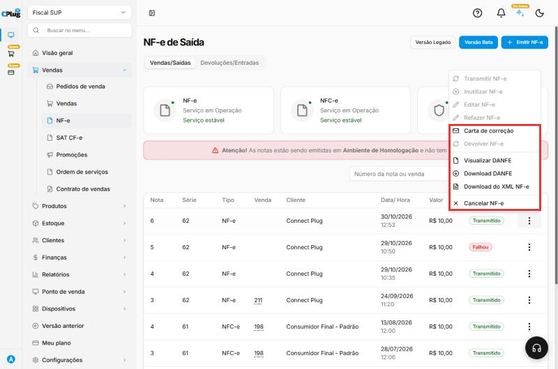
Deu algum problema?
O status ficou como Falhou
A Sefaz recusou a nota. Passe o mouse sobre Falhou para ver o motivo. Veja Como resolver uma nota fiscal rejeitada.
A nota ficou como Pendente
Ela foi salva, mas não transmitida. Use Transmitir NF-e nos três pontinhos.
Apareceu o aviso de Homologação
A empresa está no ambiente de teste: as notas não têm valor fiscal. Para emitir de verdade, o Ambiente de Geração precisa estar em Produção. Veja Como configurar a emissão de notas fiscais.
Relacionados: Como resolver uma nota fiscal rejeitada · Como cancelar, inutilizar ou corrigir uma nota fiscal · Como cadastrar um cliente
emitir nf-e nota fiscal eletrônica modelo 55 emissão manual nota de venda transmitir sefaz pendente transmitido autorizada danfe xml natureza de operação cfop 5102 5405 frete sem frete forma de pagamento à vista à prazo fatura homologação produção